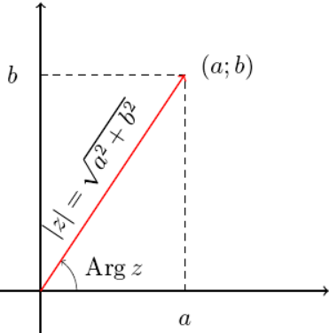

Числа вида a+bi, где:
a,b — вещественные числа,
i — мнимая единица, то есть число, для которого выполняется равенство: i^2 = -1.
Множество комплексных чисел обычно обозначается символом C.
Вещественные числа можно рассматривать как частный случай комплексных, они имеют вид a+0i.
Главное свойство C — в нём выполняется основная теорема алгебры, то есть любой многочлен
n-й степени имеет n корней.

- Сложение комплексных чисел: (x1 + iy1) + (x2 + iy2) = (x1 + x2) + i(y1 + y2);
- Умножение двух комплексных чисел: (x1 + iy1 )(x2 + iy2) = x1x2 − y1y2 + (x1y2 + x2y1)i;
- Деление комплексных чисел более сложно:
-
-
Сначала делимое и делитель умножают на число, комплексно сопряженное делителю,
после чего делитель становится действительным числом;
- В числителе умножают два комплексных числа;
- Полученную дробь почленно делят.
Ближайшее обобщение комплексных чисел было обнаружено в 1843 году. Им оказалось тело кватернионов,
которое, в отличие от поля комплексных чисел, содержит три мнимые единицы, традиционно обозначаемые
Согласно теореме Фробениуса, комплексные числа являются одним из трёх возможных случаев конечномерной
алгебры c делением над полем вещественных чисел.В 1919 году выяснилось, что и комплексные числа
из вещественных, и кватернионы из комплексных чисел могут быть получены единой процедурой удвоения
размерности, также известной как «процедура Кэли — Диксона».
Данные взяты из Wiki